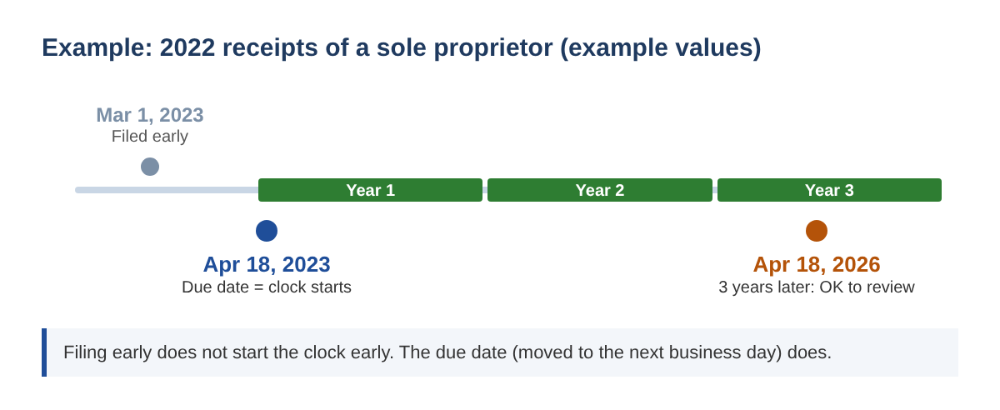
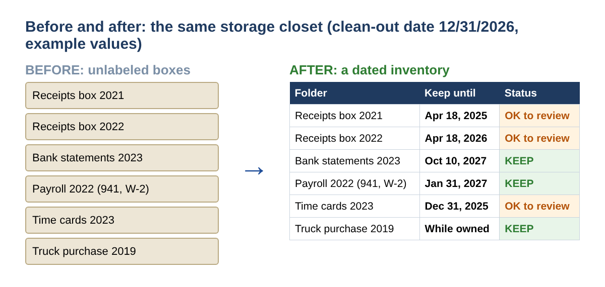

How Long Should a Small Business Keep Tax and Payroll Records? Calculate the Exact Shred Date (2026)
↓ Get the free Excel + PDF kit for this article
It is the end of the year, the storage closet is full, and there are boxes of receipts, bank statements and payroll reports going back a decade. Can you shred the 2021 box? What about old time cards, a former employee's Form I-9, or the papers for a truck you bought in 2019? Shred too early and you may have nothing to show the IRS if a year is questioned. Keep everything forever and you pay for storage and leave Social Security numbers and account numbers lying around. This guide turns the federal record-keeping rules into dates you can calculate yourself, with formulas you can type into Excel or Google Sheets.
Why there is a date at all
The IRS can generally assess more tax for a year only during a set period, called the period of limitations. The IRS says to keep records that support a return until that period runs out. For most business owners, that is 3 years from the date the return was filed. Some situations make it longer, and payroll and immigration records have their own clocks. Once you know which clock applies and when it starts, the shred date is simple math.
Step 1: Find the rule for each kind of record
Start by sorting your boxes and folders into the record types below. The periods come from the IRS, the US Department of Labor, USCIS and FinCEN (checked November 2026).
| Record | Keep for | Clock starts |
|---|---|---|
| Income and expense records (receipts, invoices, bank and card statements) | 3 years | Date filed, or the due date if you filed early |
| Records for a refund claim or amended return | 3 years after filing or 2 years after paying, whichever is later | Original return / tax paid |
| Asset records (purchase, improvements, depreciation) | While you own it, then 3 years | Return for the year you sell |
| Employment tax records (Forms 941, 940, W-2, W-4, deposits) | At least 4 years | Tax due date or date paid, whichever is later |
| FLSA payroll records (pay, hours, totals) | 3 years | Record date |
| Time cards and wage-rate tables | 2 years | Record date |
| Form I-9 | 3 years after hire or 1 year after employment ends, whichever is later | Hire date / last day |
| FBAR (foreign bank account) records | 5 years | April 15 of the year after the year reported |
| Copies of filed tax returns | Keep them (the IRS says to keep copies) | - |
Step 2: Find the date the clock starts
This is where most people get the date wrong. A return filed before its due date is treated as filed on the due date. So if you filed your 2022 Schedule C early, on March 1, 2023, the clock did not start until the due date. And the due date itself moves when the 15th falls on a weekend or a legal holiday. In 2023, April 15 was a Saturday and Monday, April 17 was Emancipation Day in Washington, DC, so the 2022 individual return was due on April 18, 2023. Three years later is April 18, 2026.

If you filed late or on extension, the clock starts on the day you actually filed. A 2023 return filed on extension on October 15, 2024 is safe to review on October 15, 2027, not in April. Due dates for calendar-year filers are the 15th of the 4th month after year-end for Form 1040 (including Schedule C) and Form 1120, and the 15th of the 3rd month for Forms 1120-S and 1065.
For payroll, the last return for a year (the fourth-quarter Form 941) is due January 31 of the next year. Use that date, or the date you actually paid if you paid late, and add 4 years. Payroll for 2022 paid on time can be reviewed after January 31, 2027.
Step 3: Check the special situations
Before you add 3 years, ask four questions. The answers can stretch the period a lot.
- If you left out income that is more than 25% of the gross income shown on the return, keep the records 6 years. The IRS also lists 6 years when unreported income from foreign financial assets is more than $5,000.
- If you claimed a loss from worthless securities or a bad debt deduction, keep the records 7 years.
- If you did not file a required return, or filed a fraudulent one, keep the records indefinitely.
- If the record supports an asset you still own, or a carryover you still use on later returns, the clock has not started yet.

Step 4: Build a dated inventory in a spreadsheet
Make one row per box or digital folder. Use these columns: A label, B tax year, C date filed (blank if you do not know it), D years to keep, E keep-until date, F status. Put your clean-out date in cell H1. Then type these formulas in row 2 and copy them down.
- Due date for a 1040 or 1120 filer (helper cell G2): =WORKDAY(DATE(B2+1,4,15)-1,1). For 1120-S or 1065, change the 4 to a 3. To match holiday moves exactly, add a list of holidays as the third argument.
- Keep-until date (E2): =EDATE(MAX(G2,C2),12*D2). MAX picks the later of the due date and the filed date, so early filing is handled for you.
- Status (F2): =IF($H$1>E2,"OK to review","KEEP")
- Payroll rows: =EDATE(MAX(WORKDAY(DATE(B2+1,1,31)-1,1),C2),48), where C2 is the date you paid if you paid late.
- Form I-9 rows, with the hire date in J2 and the last day in K2: =MAX(EDATE(J2,36),EDATE(K2,12))
The same functions work in Google Sheets. Format column E as a date. Here is what the inventory looks like with a clean-out date of December 31, 2026.
| Folder (example values) | Rule | Keep until | Status on 12/31/2026 |
|---|---|---|---|
| 2021 receipts, filed 3/2/2022 | 3 yrs from due date 4/18/2022 | 4/18/2025 | OK to review |
| 2023 bank statements, filed on extension 10/10/2024 | 3 yrs from filing | 10/10/2027 | KEEP |
| 2022 payroll (941, W-2), paid on time | 4 yrs from 1/31/2023 | 1/31/2027 | KEEP |
| 2023 time cards | 2 yrs from 12/31/2023 | 12/31/2025 | OK to review |
| Form I-9, hired 3/1/2021, left 6/28/2024 | Later of hire + 3 yrs, last day + 1 yr | 6/28/2025 | OK to review |
| 2023 bad debt deduction records | 7 yrs from due date 4/15/2024 | 4/15/2031 | KEEP |
| Truck bought in 2019, still owned | While owned | - | KEEP |
All values are examples. The workbook in the free kit handles weekends and due-date holidays for you.

Step 5: Clean out safely
"OK to review" is not "must shred". Before anything leaves the building, check whether the year is tied to an IRS letter, an audit, a lawsuit or an insurance claim; whether your state, your lender, your landlord or your insurer asks for longer; and whether the papers support an asset or a carryover you still use. Then shred papers with Social Security numbers or account numbers with a cross-cut shredder or a shredding service, wipe old computers and phones, and write a short destruction log: date, folder, method and initials.
Common mistakes
- Counting from the filing date when you filed early. The clock starts on the due date, so you may shred a few weeks too soon.
- Forgetting extensions. An October filing pushes the date six months later.
- Shredding asset records after 3 years. Purchase and improvement records are needed until 3 years after the year you sell.
- Treating payroll like income records. Employment tax records need at least 4 years, and qualified sick and family leave and employee retention credit wage records at least 6.
- Throwing away a former employee's I-9 too early, or keeping I-9s mixed into personnel files.
- Ignoring state rules. Your state can have its own period. Check it and add the extra years.
FAQ
Is 7 years the rule for everything?
No. Seven years is the IRS period for bad debt and worthless securities claims. Many people use 7 years as a simple rule of thumb, which is safe for most records but is longer than the basic 3-year period, and it is not enough for asset records or for years with no return filed.
Can I keep scanned copies instead of paper?
Many businesses keep records electronically. Make sure each scan is complete and readable, keep it for the same period as the paper, and back it up in at least two places.
What if I get an IRS letter about a year I already cleaned out?
Banks, card companies and payroll providers can often send copies of old statements. That is slow, which is why it is worth keeping anything tied to an open question until it is fully resolved.
I have a bank account in Korea. Anything extra?
If you file an FBAR, keep the account records for 5 years from April 15 of the year after the year reported. For 2020 accounts that date was April 15, 2026.
Year-end checklist
- ☐ Pick a clean-out date after this year's returns are filed.
- ☐ List every box and digital folder with its tax year and record type.
- ☐ Note filing dates, extensions and late payroll payments.
- ☐ Mark special situations (income left out, bad debt, no return).
- ☐ Keep anything tied to an audit, IRS letter, lawsuit or claim.
- ☐ Check state, lender, landlord and insurer requirements.
- ☐ Shred securely and keep a destruction log.
This article is for education only and is not tax or legal advice. It covers general federal rules as of November 2026. Your state, lender, insurer or a court may require longer periods. If you are under audit, in a dispute or unsure, keep the records and ask a qualified professional.
You can download the ready-made Business Record Retention Planner 2026 for free in the Free kit download box below (Excel + PDF guide, no sign-up).
Sources
- IRS: How long should I keep records?
- IRS Topic No. 305, Recordkeeping
- IRS: Employment tax recordkeeping
- US Department of Labor: Fact Sheet #21, FLSA recordkeeping
- USCIS: Handbook for Employers M-274, 10.0 Retaining Form I-9
- FinCEN: Record keeping (FBAR)
Free kit download
Tools to follow this article step by step. No sign-up needed.
- Step-by-step guide (PDF)Record_Retention_Guide_2026_EN.pdf · 63 KB
- Excel workbook (.xlsx)Record_Retention_Planner_2026_EN.xlsx · 34 KB
Free to use for yourself and your own business; please do not resell or redistribute. General information, not tax, legal or accounting advice; check every figure against your own records.